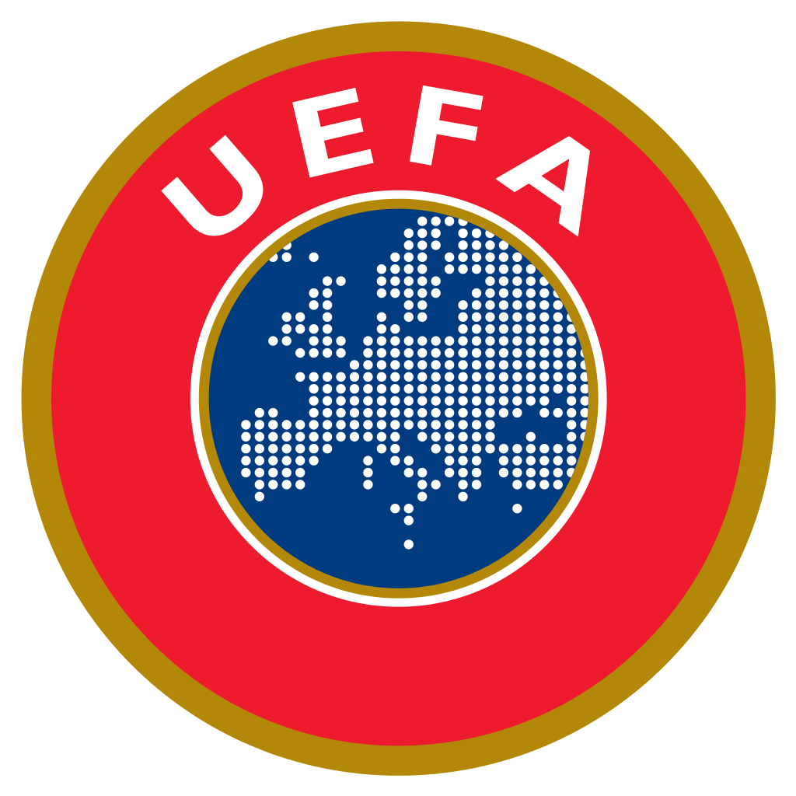

UEFA
UEFA(유럽 축구 연맹)는 리그 랭킹 1위부터 5위까지의 리그를 통틀어 이르는 말로, 이들 5개 리그는 유럽 축구에서 가장 높은 권위를 인정받는다. 스페인의 라 리가, 잉글랜드의 프리미어리그, 독일의 분데스리가, 이탈리아의 세리에 A, 프랑스의 리그앙이 5대 축구 리그로 꼽힌다.
UEFA는 1955년 유럽 각국 리그의 우승 클럽이 겨루는 유럽클럽선수권대회(European Champion Clubs' Cup)를 시작으로 다양한 대회를 주관하고 있다. 이 대회는 1992년을 마지막으로 UEFA 챔피언스리그로 개편되었다. UEFA의 주요 대회는 1960년부터 4년마다 열리는 유럽축구선수권대회(흔히 '유로(EURO)+개최연도'로 부름), 유럽의 최고 축구 클럽을 가리는 UEFA 챔피언스리그, 유럽 상위권 클럽끼리 벌이는 UEFA 유로파리그 등이 있다.